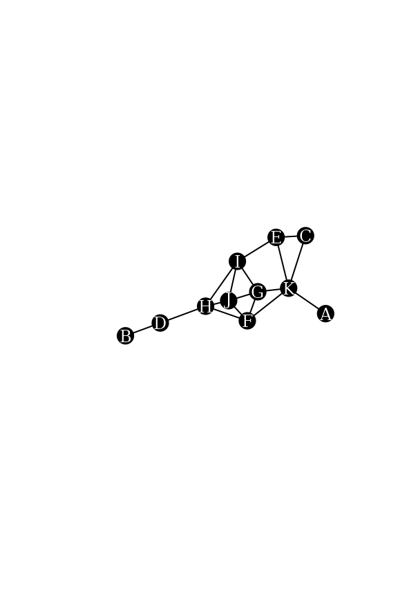

Neighborhood-inclusion in networks
Source:vignettes/neighborhood_inclusion.Rmd
neighborhood_inclusion.RmdThis vignette describes the concept of neighborhood-inclusion, its
connection with network centrality and gives some example use cases with
the netrankr package. The partial ranking induced by
neighborhood-inclusion can be used to assess partial centrality or compute probabilistic centrality.
Theoretical Background
In an undirected graph , the neighborhood of a node is defined as and its closed neighborhood as . If the neighborhood of a node is a subset of the closed neighborhood of a node , , we speak of neighborhood inclusion. This concept defines a dominance relation among nodes in a network. We say that is dominated by if . Neighborhood-inclusion induces a partial ranking on the vertices of a network. That is, (usually) some (if not most!) pairs of vertices are incomparable, such that neither nor holds. There is, however, a special graph class where all pairs are comparable (found in this vignette).
The importance of neighborhood-inclusion is given by the following result:
where is a centrality index defined on special path algebras. These include many of the well known measures like closeness (and variants), betweenness (and variants) as well as many walk-based indices (eigenvector and subgraph centrality, total communicability,…).
Very informally, if is dominated by , then u is less central than no matter which centrality index is used, that fulfill the requirement. While this is the key result, this short description leaves out many theoretical considerations. These and more can be found in
Schoch, David & Brandes, Ulrik. (2016). Re-conceptualizing centrality in social networks. European Journal of Appplied Mathematics, 27(6), 971–985. (link)
Neighborhood-inclusion in the netrankr Package
We work with the following simple graph.
data("dbces11")
g <- dbces11
plot(g,
vertex.color="black",vertex.label.color="white", vertex.size=16,vertex.label.cex=0.75,
edge.color="black",
margin=0,asp=0.5)
We can compare neighborhoods manually with the
neighborhood function of the igraph package.
Note the mindist parameter to distinguish between open and
closed neighborhood.
u <- 3
v <- 5
Nu <- neighborhood(g,order=1,nodes=u,mindist = 1)[[1]] #N(u)
Nv <- neighborhood(g,order=1,nodes=v,mindist = 0)[[1]] #N[v]
Nu## + 2/11 vertices, named, from 013399c:
## [1] E K
Nv## + 4/11 vertices, named, from 013399c:
## [1] E C I KAlthough it is obvious that Nu is a subset of
Nv, we can verify it as follows.
## [1] TRUEChecking all pairs of nodes can efficiently be done with the
neighborhood_inclusion() function from the
netrankr package.
P <- neighborhood_inclusion(g, sparse = FALSE)
P## A B C D E F G H I J K
## A 0 0 1 0 1 1 1 0 0 0 1
## B 0 0 0 1 0 0 0 1 0 0 0
## C 0 0 0 0 1 0 0 0 0 0 1
## D 0 0 0 0 0 0 0 0 0 0 0
## E 0 0 0 0 0 0 0 0 0 0 0
## F 0 0 0 0 0 0 0 0 0 0 0
## G 0 0 0 0 0 0 0 0 0 0 0
## H 0 0 0 0 0 0 0 0 0 0 0
## I 0 0 0 0 0 0 0 0 0 0 0
## J 0 0 0 0 0 0 0 0 0 0 0
## K 0 0 0 0 0 0 0 0 0 0 0If an entry P[u,v] is equal to one, we have
.
The function dominance_graph() can alternatively be used
to visualize the neighborhood inclusion as a directed graph.
g.dom <- dominance_graph(P)
plot(g.dom,
vertex.color="black",vertex.label.color="white", vertex.size=16, vertex.label.cex=0.75,
edge.color="black", edge.arrow.size=0.5,margin=0,asp=0.5)
Centrality and Neighborhood-inclusion
We start by calculating some standard measures of centrality found in
the ìgraph package for our example network. Note that the
netrankr package also implements a great variety of
indices, but they need further specifications described in this vignette.
cent.df <- data.frame(
vertex=1:11,
degree=degree(g),
betweenness=betweenness(g),
closeness=closeness(g),
eigenvector=eigen_centrality(g)$vector,
subgraph=subgraph_centrality(g)
)
#rounding for better readability
cent.df.rounded <- round(cent.df,4)
cent.df.rounded## vertex degree betweenness closeness eigenvector subgraph
## A 1 1 0.0000 0.0370 0.2260 1.8251
## B 2 1 0.0000 0.0294 0.0646 1.5954
## C 3 2 0.0000 0.0400 0.3786 3.1486
## D 4 2 9.0000 0.0400 0.2415 2.4231
## E 5 3 3.8333 0.0500 0.5709 4.3871
## F 6 4 9.8333 0.0588 0.9847 7.8073
## G 7 4 2.6667 0.0526 1.0000 7.9394
## H 8 4 16.3333 0.0556 0.8386 6.6728
## I 9 4 7.3333 0.0556 0.9114 7.0327
## J 10 4 1.3333 0.0526 0.9986 8.2421
## K 11 5 14.6667 0.0556 0.8450 7.3896Notice how for each centrality index, different vertices are
considered to be the most central node. The most central from degree to
subgraph centrality are
,
,
,
and
.
Note that only undominated vertices can achieve the highest
score for any reasonable index. As soon as a vertex is dominated by at
least one other, it will always be ranked below the dominator. We can
check for undominated vertices simply by forming the row Sums in
P.
## D E F G H I J K
## 4 5 6 7 8 9 10 118 nodes are undominated in the graph. It is thus entirely possible to find indices that would also rank and on top.
Besides the top ranked nodes, we can check if the entire partial
ranking P is preserved in each centrality ranking. If there
exists a pair
and
and index
such that
but
,
we do not consider
to be a valid index.
In our example, we considered vertex
and
,
where
was dominated by
.
It is easy to verify that all centrality scores of
are in fact greater than the ones of
by inspecting the respective rows in the table. To check all pairs, we
use the function is_preserved. The function takes a partial
ranking, as induced by neighborhood inclusion, and a score vector of a
centrality index and checks if
P[i,j]==1 & scores[i]>scores[j] is
FALSE for all pairs i and j.
apply(cent.df[,2:6],2,function(x) is_preserved(P,x))## degree betweenness closeness eigenvector subgraph
## TRUE TRUE TRUE TRUE TRUEAll considered indices preserve the neighborhood inclusion preorder on the example network.
NOTE: Preserving neighborhood inclusion on one network does not guarantee that an index preserves it on all networks. For more details refer to the paper cited in the first section.